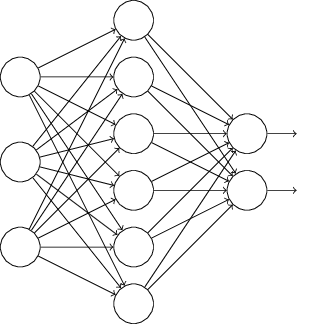

Regolarizzazione
Le reti neurali, durante il loro processo di apprendimento, sfruttano, come abbiamo visto, la funzione costo per decidere come sistemare i propri parametri, ovvero pesi e bias. Abbiamo visto che c'è anche un grande problema, che è quello dell'overfitting. Sono state sviluppate alcune tecniche che, operando sulla funzione costo, aiutano a ridurre gli effetti del sovraallenamento di una rete neurale. Tali tecniche prendono il nome di tecniche di regolarizzazione.
Generalmente, tali tecniche prevedono l'aggiunta di un fattore, dipendente dai pesi, dopo l'espressione della funzione costo:
funzione costo = funzione costo originale + λ * funzione di regolarizzazione
La regolarizzazione può essere vista come un compromesso tra trovare pesi piccoli e minimizzare la funzione costo. Il parametro λ viene detto tasso di regolarizzazione e serve per determinare il bilanciamento di tale compromesso: quando λ è piccolo, allora preferiamo minimizzare la funzione costo, mentre quando è grande, cerchiamo di trovare pesi piccoli.
Una delle tecniche più utilizzate è chiamata regolarizzazione L2 o decadimento dei pesi: utilizza la somma dei quadrati dei pesi come funzione di regolarizzazione. Ma questi sono dettagli. Sappiate solo che il nome L2 deriva dal fatto che utilizza dei quadrati.
Esistono anche numerose altre tecniche di regolarizzazione. Di seguito ve ne riporto tre delle più usate.
- La regolarizzazione L1 è analoga alla L2, solo che usa la somma dei pesi, invece della somma dei loro quadrati.
- La tecnica di dropout invece funziona diversamente, in quanto modifica non la funzione
di costo della rete, ma la rete stessa. Abbiamo visto il principio di funzionamento di una rete neurale
e come essa riesca ad allenarsi. Ecco, questa tecnica prevede di applicare il solito procedimento
togliendo prima una certa percentuale di neuroni in ogni hidden layer! Per ogni epoca di allenamento si sceglie
(casualmente) quali neuroni tenere e quali scartare e si allena la rete così
ottenuta. Si ripete quindi il procedimento, tenendo e scartando neuroni diversi ad ogni epoca:
una volta che si ritiene che la rete sia pronta, si prende la rete originale e si aggiustano i pesi
uscenti dai neuroni nascosti: abbiamo ottenuto una rete pronta a svolgere il proprio compito. In poche
parole, è come se usassimo tante reti diverse e poi prendessimo come risultato la media di tutti i
risultati di queste reti. Va tenuto ben presente che questo procedimento è applicato solo in fase di
allenamento: durante il funzionamento vero e proprio, la rete è considerata nella sua interezza.
 →

La figura qui sopra mostra il procedimento svolto durante il dropout. Ad ogni epoca, poi, faremo in modo di avere una rete diversa ogni volta, considerando neuroni diversi.
- Si può anche pensare di ampliare artificialmente i dati di allenamento, in quanto ottenere
nuovi dati per allenare la rete è sempre una buona idea. Il problema è che non sempre è possibile,
oppure è troppo costoso ottenerne di nuovi. Quindi se ne generano di nuovi a partire da quelli che
abbiamo già a disposizione. Ad esempio, se la nostra rete dovesse riconoscere delle cifre scritte a
mano, potremmo applicare delle piccole rotazioni o delle lievi dilatazioni o restrizioni ai dati
che abbiamo già in possesso, creando delle immagini nuove da fornire alla nostra rete neurale. In
generale, si cerca di espandere il set di allenamento cercando di riprodurre quelle che sono le
variazioni che di solito hanno nella pratica.


Nonostante la differenza sia minima, per l'analisi svolta dalla rete sono due immagini completamente diverse.
Potreste chiedervi come tutto questo può aiutare a ridurre l'overfitting. Ebbene, la regolarizzazione aiuta le reti neurali a generalizzare meglio, in quanto una rete con pesi piccoli non varia il proprio comportamento se cambiano alcuni dei dati di input. Questo le rende particolarmente difficile memorizzare le peculiarità dei dati, mentre la aiuta ad apprendere meglio quelli che sono i modelli e gli schemi dei dati di allenamento.
Il principale problema della regolarizzazione è che non si è ancora capito esattamente il perché essa aiuti a migliorare le prestazioni di una rete neurale, ma abbiamo a disposizione solo evidenze pratiche di questo fatto. Nonostante questo, la regolarizzazione è ampiamente utilizzata e ci aiuta a migliorare le prestazioni delle nostre reti neurali.